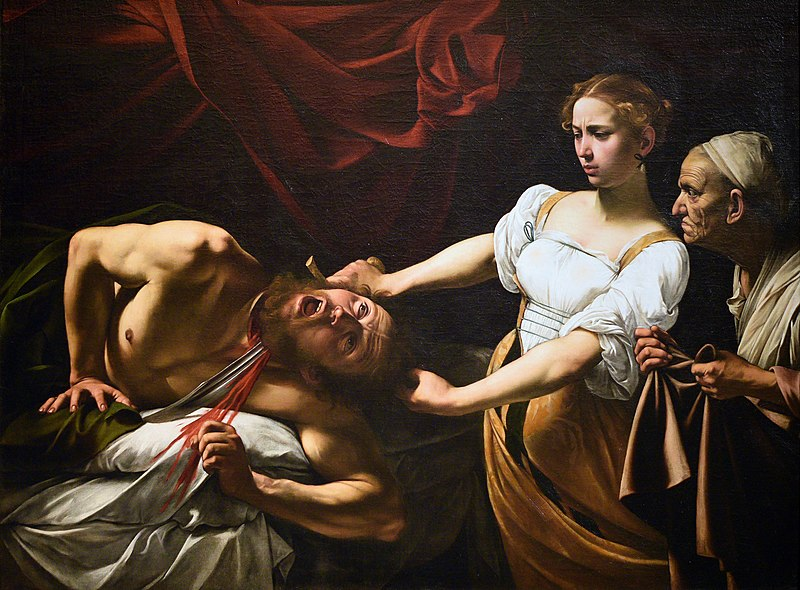
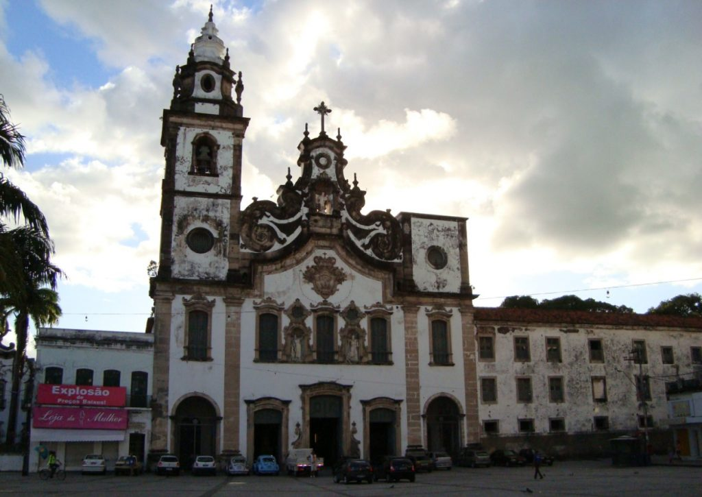
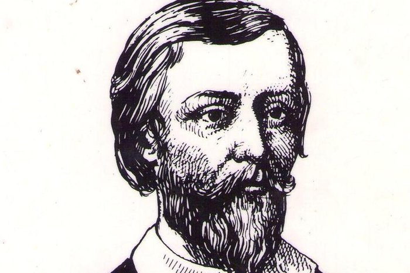
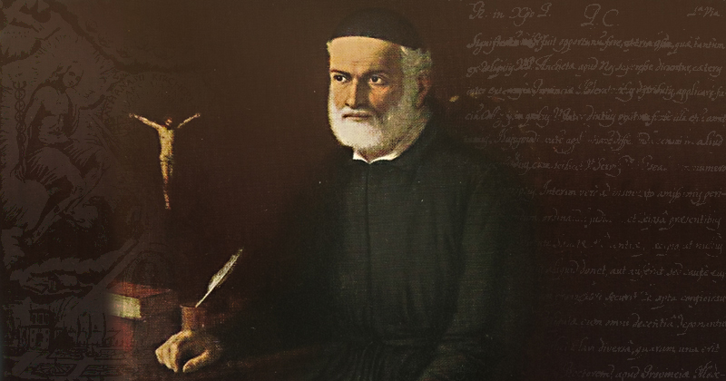

A origem da literatura brasileira
A literatura brasileira teve sua origem com a chegada dos colonizadores portugueses e desenvolveu-se ao longo dos séculos. Dois dos primeiros estilos literários marcantes foram o Barroco e o Classicismo.
Contexto histórico do Barroco
Esse movimento artístico se deu durante um momento conturbado, onde acontecia a reforma protestante de Martinho Lutero. Logo após foi realizado o Concílio de Trento, em resposta à reforma, trazendo grandes reformas ao Catolicismo e retomando a autoridade da Igreja Romana, mesmo depois de perder muitos fiéis. O Barroco surgiu como uma forma de propagar a fé católica e atrair mais fiéis à igreja, se baseando em uma arte eclesiástica, onde se construíram inúmeras igrejas, templos e estátuas para veneração de santos.
O Barroco na Europa
O Barroco se iniciou na Itália, e posteriormente se espalhou para os outros diversos países europeus. Em seu país de origem, podemos citar alguns artistas famosos como Caravaggio (1571-1610), que pintava temas religiosos sempre utilizando do contraste entre luz e escuridão. Em suas pinturas, as personagens eram reunidas na cena principal sob um foco de luz, com um fundo muito mais escuro. Isso destaca as figuras, adicionando a cada uma delas um efeito de escultura. Essa técnica ficou conhecida como tenebrismo.

O Barroco no Brasil
O Barroco no Brasil chegou por meio dos jesuítas, no fim do século XVI, o que ajudaria na missão de catequizar os índigenas. O período artístico teve grande importância e criou grandes obras nos ramos da arquitetura, na pintura e estatuaria. Por esse objetivo dos jesuítas, a maioria da arte produzida no Barroco aqui no Brasil consiste em arte sacra e na construção de igrejas.

Características dominantes do Barroco:
• Arte rebuscada e exagerada;
• Valorização do detalhe;
• Dualismo e contradições;
• Obscuridade;
• Complexidade;
• Calorização das sensações;
• Barroco literário: cultismo e conceptismo;
• Antítese e paradoxo;
• Paganismo contra catolicismo; • Pessimismo;
• Rebuscamento;
• Hipérbole;
• Cultismo ou gongorismo;
• Conceptismo ou quevedismo;
• Morbidez;
• Sentimento de culpa;
• Carpe diem;
Principais autores e obras
Gregório de Matos
Gregório de Matos, conhecido também como Boca do Inferno, é o representante máximo da poesia barroca brasileira. Ele era filho de um nobre português e se formou em direito em Portugal, mas a literatura foi o que mais o atraiu. Suas obras criticavam as ações do governo, a sociedade, e até mesmo a Igreja Católica, o que o fez ser perseguido pela Inquisição, sendo condenado no ano de 1694 na Angola, onde contrariu uma febre e morreu posteriormente.

Seus poemas podem ser divididos entre satíricos (o que lhe rendeu o apelido de Boca do Inferno), líricos, eróticos e religiosos, não tendo publicado nenhum em vida. Seguimos com exemplos de um poema satírico, um lírico e outro religioso:
Poema lírico
Neste poema denominado "A uma saudade", podemos perceber características do movimento Barroco, como o pessimismo, a obscuridade, a morbidez e a hipérbole:
Onde voando os ares a porfia,
Apenas solta a luz a aurora fria,
Quando a prende da noite a
escuridade.
Ah cruel apreensão de uma saudade!
De uma falsa esperança fantasia,
Que faz que de um momento passe a um dia,
E que de um dia passe à
eternidade!
São da dor os espaços sem medida,
E a medida das horas tão pequena,
Que não sei como a dor é tão crescida.
Mas é troca cruel, que o fado ordena,
Porque a pena me cresça para a vida,
Quando a vida me falta para a pena.
Poema satírico
Que nos quer governar cabana e vinha;
Não sabem governar sua cozinha
E podem governar o mundo inteiro.
Em cada porta um bem frequente olheiro,
Que a vida do vizinho e da vizinha
Pesquisa, escuta, espreita eesquadrinha,
Para o levar à praça e ao terreiro.
Muitos mulatos desavergonhados,
Trazidos sob os pés os homens nobres,
Posta nas palmas toda a picardia,
Estupendas usuras nos mercados,
Todos os que não furtam muito pobres,
E eis aqui a cidade da Bahia.
Trecho do poema satírico "Que falta nesta cidade?"
Que mais por sua desonra? … Honra.
Falta mais que se lhe ponha? … Vergonha.
O demo a viver se exponha,
por mais que a fama a exalta,
numa cidade onde falta
Verdade, Honra, Vergonha."
Poema religioso
A parte sem o todo não é parte,
Mas a parte o faz todo, sendo parte,
Não se diga, que é parte, sendo todo.
Em todo o Sacramento está Deus todo,
E todo assiste inteiro em qualquer parte,
Em qualquer parte sempre fica o todo.
O braço de Jesus não seja parte,
Pois que feito Jesus em partes todo,
Assiste cada parte em sua parte.
Não se sabendo parte deste todo,
Um braço, que lhe acharam, sendo parte,
Nos diz as partes todas deste todo.
Padre Antônio Vieira
Padre Antônio Vieira foi um escritor e orador enviado como missionário jesuíta para o Brasil para catequizar os índigenas durante a colonização portuguesa. Lutou ao lado do Padre Manuel da Nóbrega para defender indígenas, judeus e os que foram escravizados, fazendo com que fosse perseguido pela inquisição posteriormente. O Padre possui diversas obras literárias, dentre elas cartas, poemas, sermões e até romances.

Sermão
Trecho do Sermão de Santo Antônio aos Peixes (1654):
"Vós, peixes, não fostes criados para os vossos estômagos, mas para os nossos. A vós fez-vos Deus, não para que vos mantivésseis de vós, senão para que nos mantivésseis a nós. Não cuideis que o vosso trabalho há de ser mais para vós que para outros: alheia é a comida que comeis, alheia é a vida que viveis, alheio é o fim para que viveis, e alheio há de ser o proveito do vosso morrer."